Results-based management
Corporate monitoring, evaluation and reporting that connect activities to measurable outcomes.
Regional Programme Officer, FAO Regional Office for Africa — over 20 years in international development.
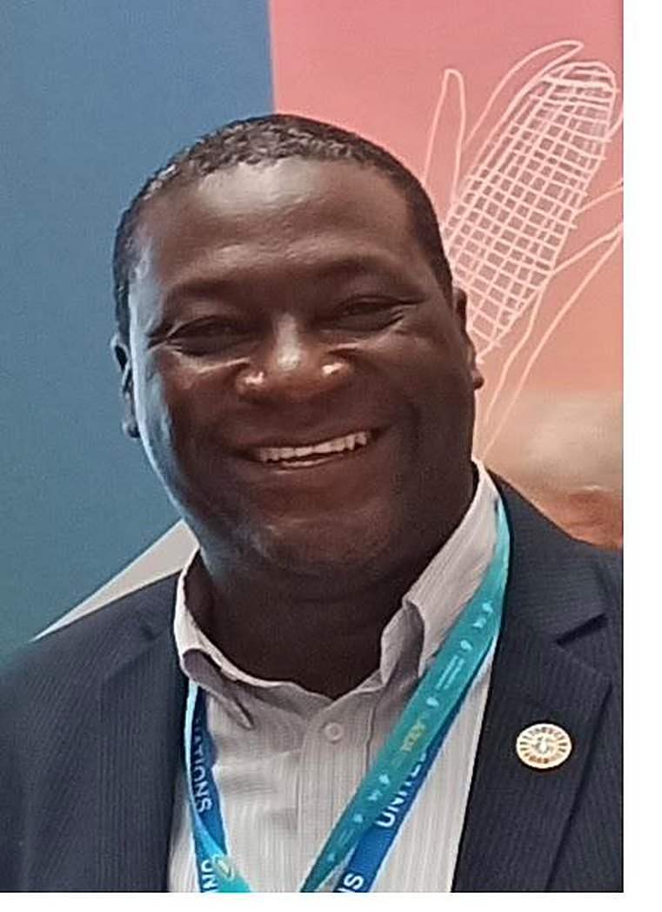
Hervé Ouédraogo is an accomplished development practitioner and leader with over 20 years of experience, including 14 years within the United Nations system. He has worked at country, subregional, regional and headquarters levels, as well as across the private sector, international financial institutions, academia and governments.
At the Food and Agriculture Organization of the United Nations (FAO), he leads the preparation and implementation of strategic instruments — Common Country Analysis (CCA), United Nations Sustainable Development Cooperation Frameworks (UNSDCF), Country Programming Frameworks (CPF) and UN INFO — and programmes for the Africa region. He advises on and oversees the allocation and management of an annual programme budget of USD 50 million, leading a team of more than 60 personnel across multiple countries.
Results are not paperwork — they are the promise we make to the people we serve, kept and measured.
His expertise spans strategic planning, resource mobilization and systems-based practice to enable agrifood systems transformation, with particular attention to climate change, natural resource management and the partnerships that turn ambition into delivery.
A selection of recent engagements — convening partners, addressing governing bodies and supporting FAO country offices.
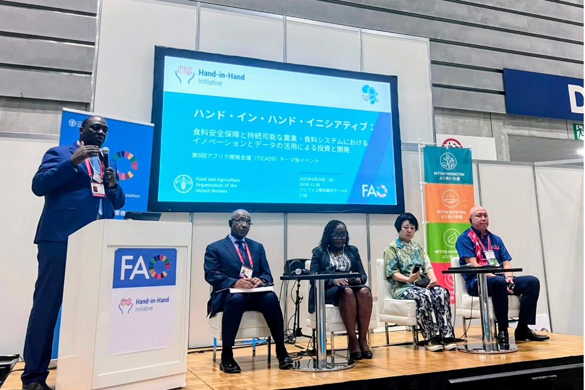
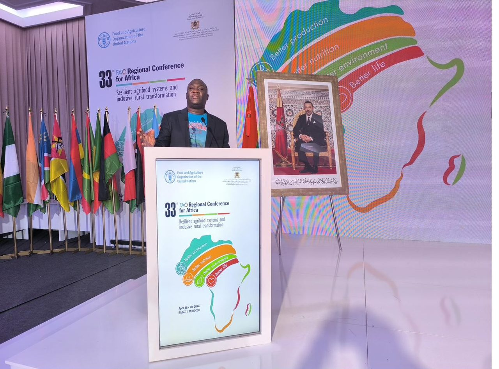
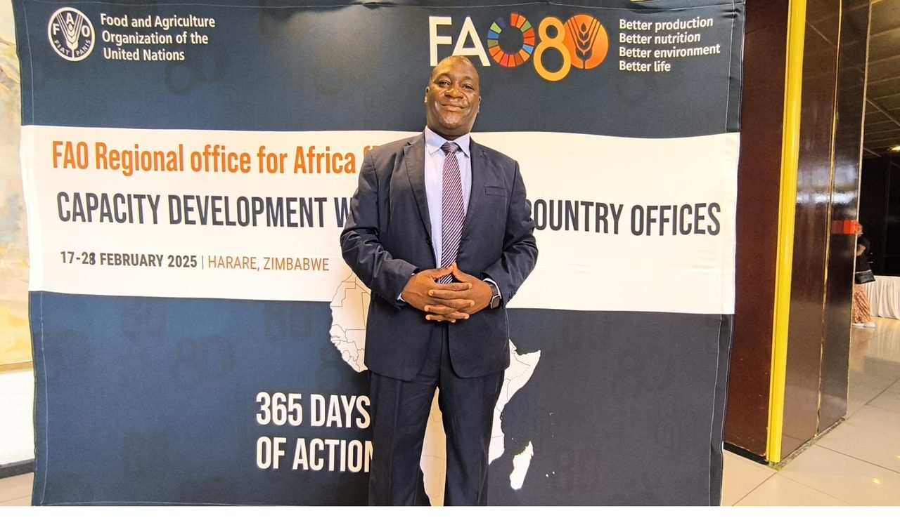
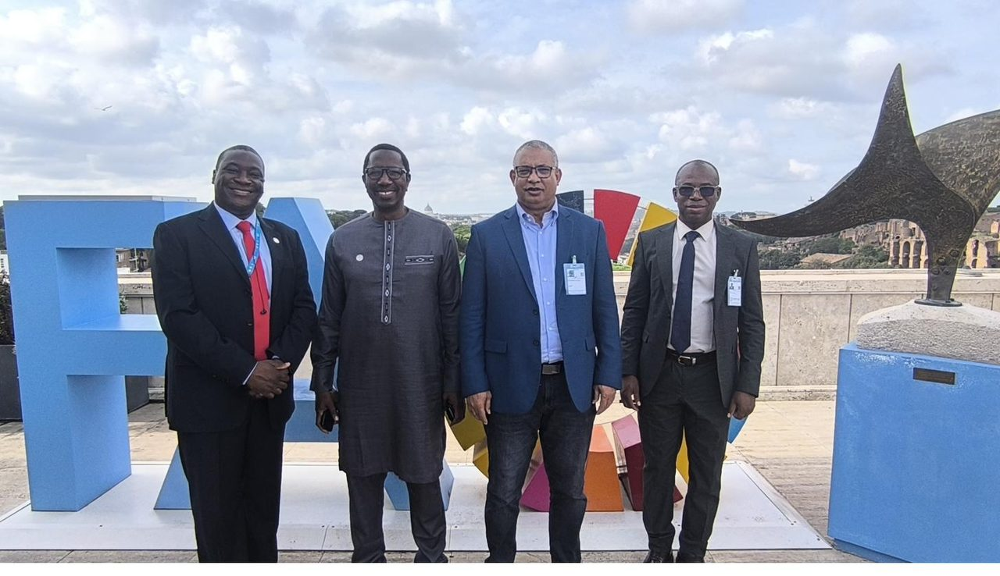
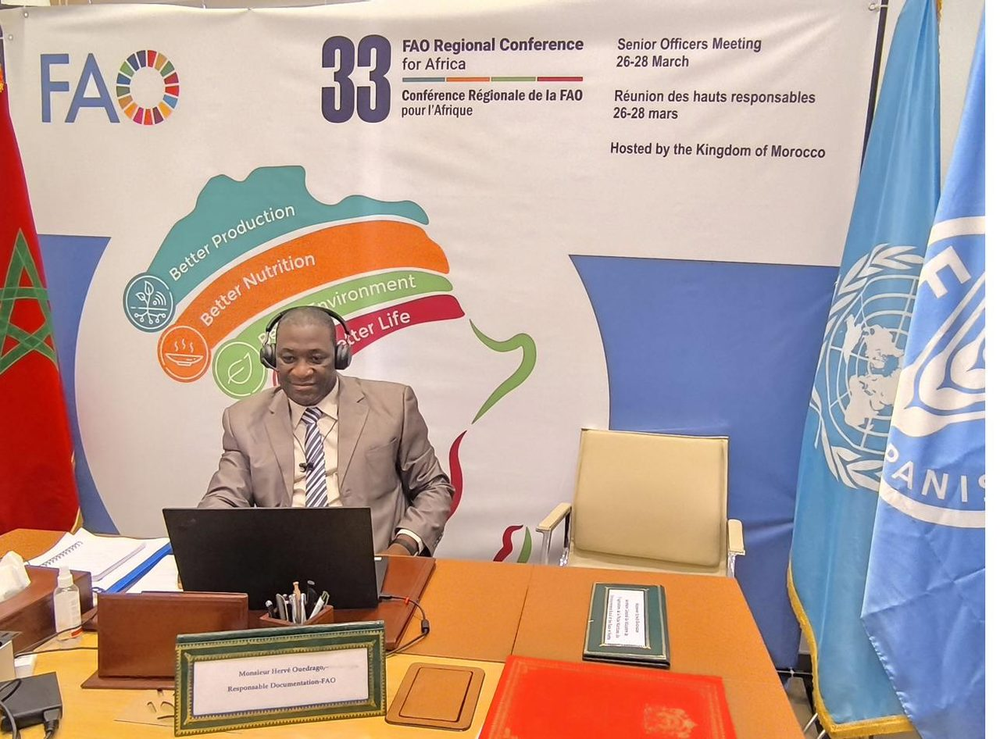
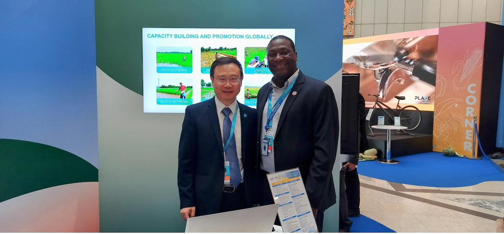
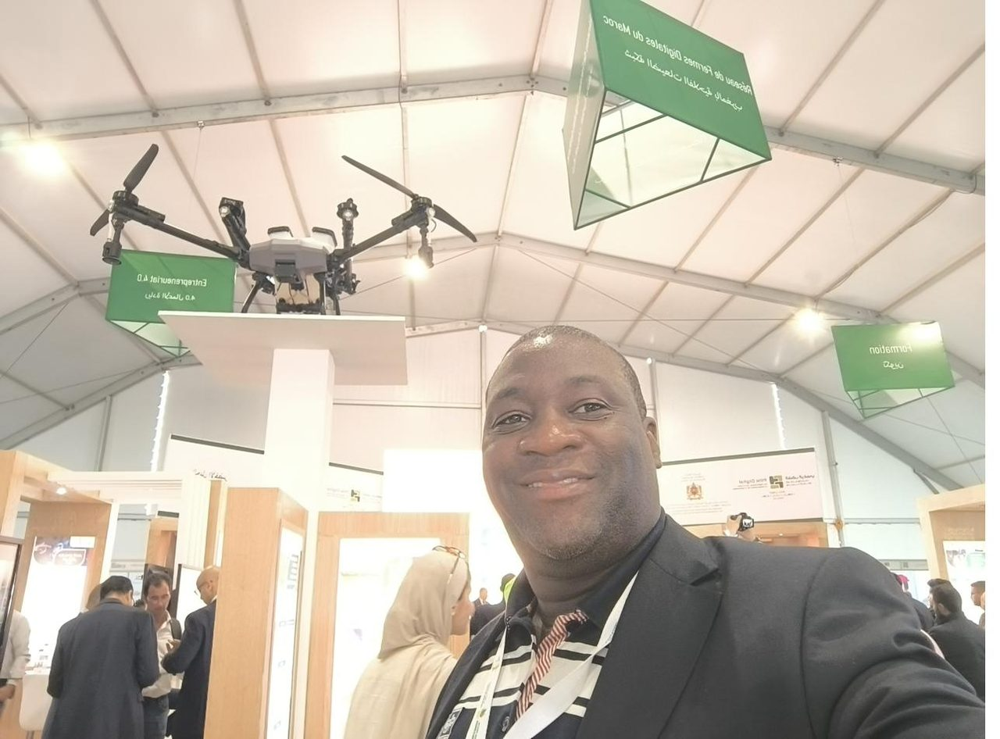
From results frameworks to financing, a set of interlocking competencies built across two decades.
Corporate monitoring, evaluation and reporting that connect activities to measurable outcomes.
CCA, UNSDCF, CPF and UN INFO — the instruments that align FAO with national priorities.
Programmes addressing climate change, natural resource management and food security.
Positioning within the donor community and structuring partnerships with resource partners and IFIs.
Regional Focal Point for Francophone countries, supporting investment and finance planning.
Driving the SCOPE initiative and data-driven delivery within country programming.
Theory of change, project cycle management and the mentoring of country-level teams.
Inter-agency collaboration across the United Nations system and with regional bodies.
Co-leads strategic development and advises on a USD 50 million annual programme budget; Regional Focal Point for the Hand-in-Hand Initiative (Francophone countries).
Backstopped 47 country offices and four subregional offices; positioned FAO with donors, supporting USD 55 million in mobilized resources.
Established monitoring and evaluation frameworks for eight countries and mobilized USD 4 million for subregional projects.
Supported emergency prevention systems and inter-agency early-warning and food-security assessment missions.
Delivered graduate courses on project cycle management, results-based management and theory of change.
Economist, evaluation team leader and monitoring officer across bilateral, multilateral and research institutions.
Annual regional programme budget advised and overseen.
Resources mobilized through donor negotiations (2015–2017).
People reached by a health programme he managed logistics and M&E for.
Health agents and officials trained across national campaigns.
A space for reflections on results management, agrifood systems and country programming. New pieces and speaking engagements will appear here.
Invite Hervé to speakTime with my family keeps the work in perspective. I make a point of introducing my children to nature — the wildlife, the land and the animals at the heart of the agrifood systems I work on every day.
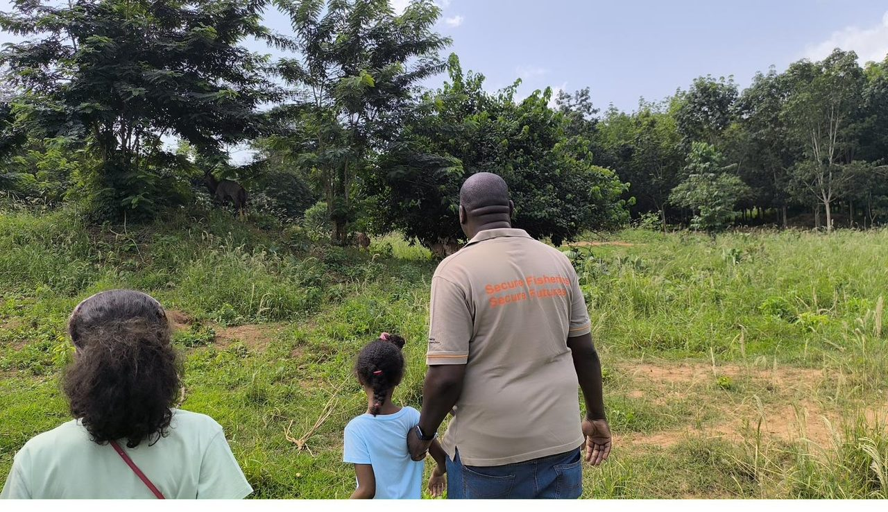
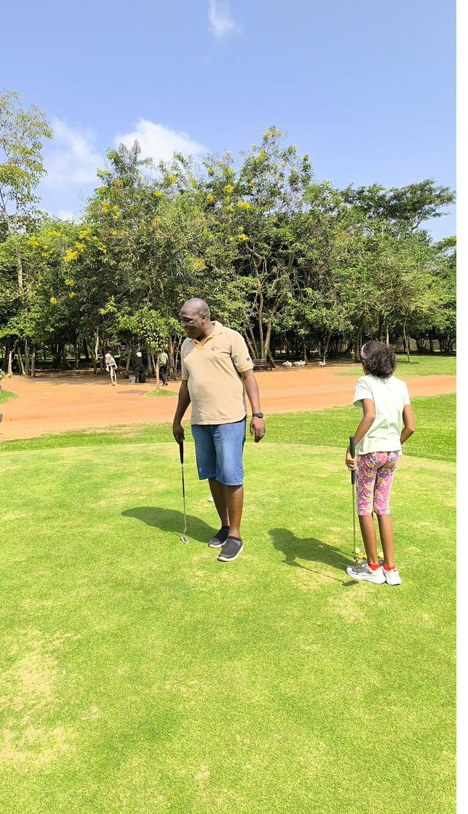
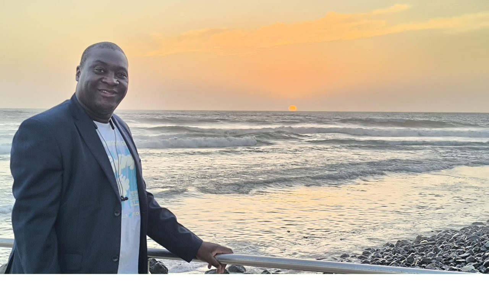
For partnership, speaking or advisory enquiries, the most reliable way to reach me is by email or LinkedIn.